একই হরের মিশ্র ভগ্নাংশের যোগের মডেল তৈরি করো
উৎস-অনুগত উপবিভাগ · m81290-fs-id1946649। সম্পূর্ণ বইয়ের অনুবাদ এখনও চলছে। গাণিতিক চিহ্ন, সংখ্যা ও মূল কাঠামো অক্ষুণ্ণ; প্রযোজ্য ক্ষেত্রে সূত্রের শব্দলেবেল বাংলায় অনূদিত। মূল ছবির ভিতরের ইংরেজি লেবেলের অর্থ বাংলা বিবরণে আছে। স্বাধীন শিক্ষক ও ভাষা-পর্যালোচনা বাকি। অন্য উপবিভাগের উৎস-লিঙ্কে ইন্টারনেট প্রয়োজন।
একই হরের মিশ্র ভগ্নাংশের যোগের মডেল তৈরি করো
এতক্ষণ আমরা প্রকৃত ও অপ্রকৃত ভগ্নাংশ যোগ ও বিয়োগ করেছি, কিন্তু মিশ্র ভগ্নাংশ নিয়ে তা করিনি। এবার টাকার উদাহরণ দিয়ে মিশ্র ভগ্নাংশের যোগ বুঝব। এখানে মার্কিন ডলার ব্যবহার করা হয়েছে। একটি কোয়ার্টার মুদ্রার মূল্য এক ডলারের এক চতুর্থাংশ, অর্থাৎ ২৫ সেন্ট।
রনের কাছে ডলার ও টি কোয়ার্টার থাকলে তার মোট অর্থ ডলার।
ডনের কাছে ডলার ও টি কোয়ার্টার থাকলে তার মোট অর্থ ডলার।
রন ও ডন তাদের টাকা একত্র করলে কত হবে? তাদের কাছে থাকবে ডলার ও টি কোয়ার্টার। তারা গোটা ডলারগুলি যোগ করে, তারপর কোয়ার্টারগুলি যোগ করে। ফলে হয় ডলার। দুটি কোয়ার্টার মিলে আধ ডলার হয়, তাই মোট অর্থ ডলার ও আধ ডলার, অর্থাৎ ডলার।
তুমি যখন গোটা ডলারগুলি যোগ করলে, তারপর কোয়ার্টারগুলি যোগ করলে, তখন আসলে পূর্ণসংখ্যা অংশগুলি যোগ করেছ, তারপর ভগ্নাংশ অংশগুলি যোগ করেছ।
এই একই উদাহরণের মডেল তৈরি করতে ভগ্নাংশের বৃত্ত ব্যবহার করা যায়। প্রতিটি গোটা বৃত্ত একই মাপের সমগ্র বোঝায়; তার সমান ভাগগুলি ভগ্নাংশ অংশ বোঝায়। এখানে পাশাপাশি লেখা পূর্ণসংখ্যা অংশ ও ভগ্নাংশ অংশ যোগ করে মিশ্র ভগ্নাংশের মান পাওয়া যায়, গুণ করে নয়:
| শুরুতে নাও । | একটি গোটা বৃত্ত এবং অংশের একটি টুকরো | একটি গোটা রঙ করা বৃত্ত এবং একই মাপের বৃত্তের এক চতুর্থাংশ টুকরো। টুকরোটির ভগ্নাংশে লব ১, হর ৪। |
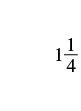 মিশ্র ভগ্নাংশ: পূর্ণসংখ্যা অংশ ১ এবং ভগ্নাংশ অংশের লব ১, হর ৪। মান এক যোগ এক চতুর্থাংশ। |
| আরও যোগ করো। | দুটি গোটা বৃত্ত এবং অংশের একটি টুকরো | 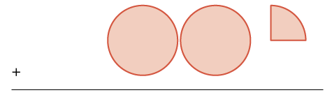 যোগচিহ্নের পাশে দুটি গোটা রঙ করা বৃত্ত এবং একই মাপের বৃত্তের এক চতুর্থাংশ টুকরো। টুকরোটির লব ১, হর ৪। নীচে যোগের ফল লেখার রেখা আছে। |
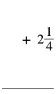 যোগচিহ্নের পরে মিশ্র ভগ্নাংশ: পূর্ণসংখ্যা অংশ ২, ভগ্নাংশ অংশের লব ১ ও হর ৪। নীচে যোগের ফল লেখার রেখা। |
| যোগফল: | তিনটি গোটা বৃত্ত এবং অংশের দুটি টুকরো | 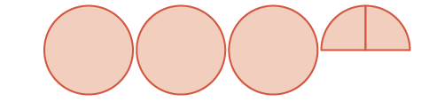 তিনটি গোটা রঙ করা বৃত্ত এবং একই মাপের বৃত্তের দুটি এক চতুর্থাংশ টুকরো। টুকরো দুটি পাশাপাশি মিলে অর্ধবৃত্ত হয়েছে, মাঝের ভাগের রেখা দেখা যাচ্ছে। |
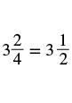 পূর্ণসংখ্যা অংশ ৩ এবং ভগ্নাংশ অংশের লব ২, হর ৪-এর মিশ্র ভগ্নাংশ সমান পূর্ণসংখ্যা অংশ ৩ এবং ভগ্নাংশ অংশের লব ১, হর ২-এর মিশ্র ভগ্নাংশ। দুই চতুর্থাংশকে এক অর্ধাংশে সরল করা হয়েছে। |
অনুশীলন · এই প্রশ্নের লিঙ্ক
মডেল তৈরি করো: । যোগফল জানাও।
সমাধান
ভগ্নাংশের বৃত্ত ব্যবহার করব। পূর্ণসংখ্যা অংশের জন্য গোটা বৃত্ত এবং ভগ্নাংশ অংশের জন্য অংশের টুকরো নেব। সব গোটা বৃত্ত একই মাপের হবে।
| দুটি গোটা বৃত্ত এবং অংশের একটি টুকরো | দুটি গোটা রঙ করা বৃত্ত এবং একই মাপের বৃত্তের এক তৃতীয়াংশ টুকরো। টুকরোটির ভগ্নাংশে লব ১, হর ৩। এটি এক চতুর্থাংশ নয়। |
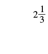 মিশ্র ভগ্নাংশ: পূর্ণসংখ্যা অংশ ২ এবং ভগ্নাংশ অংশের লব ১, হর ৩। |
| যোগ করো একটি গোটা বৃত্ত এবং অংশের দুটি টুকরো | 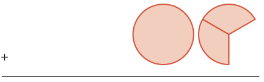 যোগচিহ্নের পাশে একটি গোটা রঙ করা বৃত্ত এবং একই মাপের বৃত্তের দুটি এক তৃতীয়াংশ টুকরো। দুটি মিলে দুই তৃতীয়াংশ। নীচে যোগের ফল লেখার রেখা। |
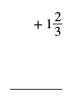 যোগচিহ্নের পরে মিশ্র ভগ্নাংশ: পূর্ণসংখ্যা অংশ ১ এবং ভগ্নাংশ অংশের লব ২, হর ৩। নীচে যোগের ফল লেখার রেখা। |
| যোগফল তিনটি গোটা বৃত্ত এবং অংশের তিনটি টুকরো | 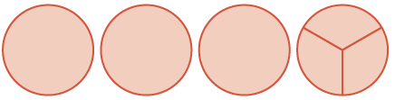 চারটি গোটা রঙ করা বৃত্ত। প্রথম তিনটি অবিভক্ত; চতুর্থটি তিনটি সমান ভাগে ভাগ করা। তিনটি এক তৃতীয়াংশ মিলে আরও একটি গোটা বৃত্ত হয়েছে। |
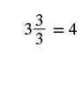 ছবিতে পাশাপাশি ৩ এবং লব ৩, হর ৩-এর ভগ্নাংশ লেখা আছে, তারপর সমান ৪। এখানে পাশাপাশি লেখা মানে তিন যোগ তিন তৃতীয়াংশ; তিন তৃতীয়াংশ এক গোটা, তাই ফল চার। |
এটি টি গোটা বৃত্তের সমান। তাই
অনুশীলন · এই প্রশ্নের লিঙ্ক
মডেল তৈরি করো: । যোগফল মিশ্র ভগ্নাংশে প্রকাশ করো।
সমাধান
ভগ্নাংশের বৃত্ত ব্যবহার করব। পূর্ণসংখ্যা অংশের জন্য গোটা বৃত্ত এবং ভগ্নাংশ অংশের জন্য অংশের টুকরো নেব। সব গোটা বৃত্ত একই মাপের হবে।
| একটি গোটা বৃত্ত এবং অংশের তিনটি টুকরো | একটি গোটা রঙ করা বৃত্ত এবং একই মাপের বৃত্তের তিনটি এক পঞ্চমাংশ টুকরো। তিনটি মিলে লব ৩, হর ৫-এর ভগ্নাংশ। এটি তিন চতুর্থাংশ নয়। |
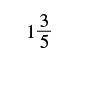 মিশ্র ভগ্নাংশ: পূর্ণসংখ্যা অংশ ১ এবং ভগ্নাংশ অংশের লব ৩, হর ৫। |
| যোগ করো দুটি গোটা বৃত্ত এবং অংশের তিনটি টুকরো। | 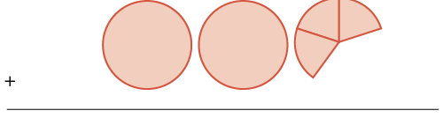 যোগচিহ্নের পাশে দুটি গোটা রঙ করা বৃত্ত এবং একই মাপের বৃত্তের তিনটি এক পঞ্চমাংশ টুকরো। ভগ্নাংশ অংশের লব ৩, হর ৫; এটি দুই তৃতীয়াংশ নয়। নীচে যোগের ফল লেখার রেখা। |
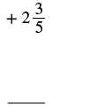 যোগচিহ্নের পরে মিশ্র ভগ্নাংশ: পূর্ণসংখ্যা অংশ ২ এবং ভগ্নাংশ অংশের লব ৩, হর ৫। নীচে যোগের ফল লেখার রেখা। |
| যোগফল তিনটি গোটা বৃত্ত এবং অংশের ছয়টি টুকরো | 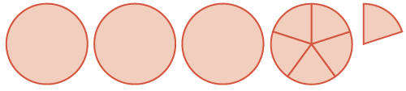 প্রথমে তিনটি গোটা রঙ করা বৃত্ত। তার পরে আরও একটি গোটা বৃত্ত, পাঁচটি সমান ভাগে ভাগ করা ও সম্পূর্ণ রঙ করা। তারও পরে অতিরিক্ত এক পঞ্চমাংশ টুকরো। মোট চারটি গোটা এবং এক পঞ্চমাংশ। শেষের ভাগ করা গোটা বৃত্ত ও অতিরিক্ত টুকরো মিলে ছয় পঞ্চমাংশ। |
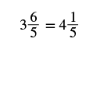 ছবিতে পাশাপাশি ৩ এবং লব ৬, হর ৫-এর ভগ্নাংশ লেখা আছে; সেটি সমান পূর্ণসংখ্যা অংশ ৪ এবং ভগ্নাংশ অংশের লব ১, হর ৫-এর মিশ্র ভগ্নাংশ। বাঁদিকের অন্তর্বর্তী রূপে তিন যোগ ছয় পঞ্চমাংশ বোঝানো হয়েছে; ছয় পঞ্চমাংশ থেকে এক গোটা আলাদা করলে চার গোটা ও এক পঞ্চমাংশ হয়। |
গোটা বৃত্ত ও এক পঞ্চমাংশের টুকরোগুলি যোগ করে অন্তর্বর্তী রূপে পেলাম এখানে পাশাপাশি লেখা অংশদুটি যোগ করতে হবে; ভগ্নাংশ অংশটি অপ্রকৃত বলে এটি এখনও যথাযথ মিশ্র ভগ্নাংশ নয়। দেখা যাচ্ছে, সমান তাই এই মানকে -এর সঙ্গে যোগ করলে পাওয়া যায়